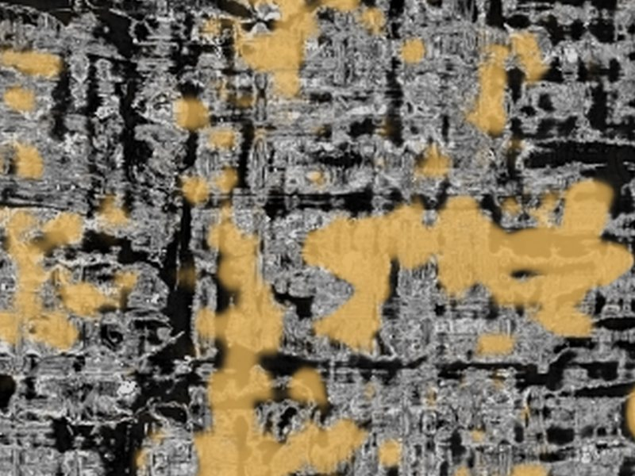
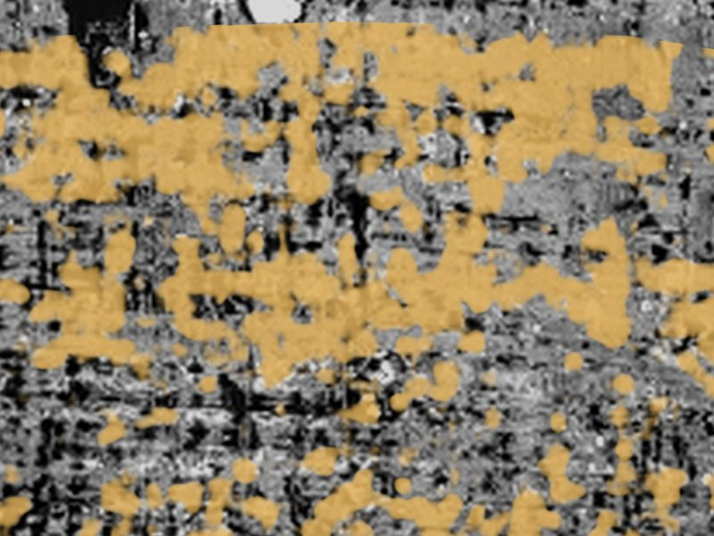
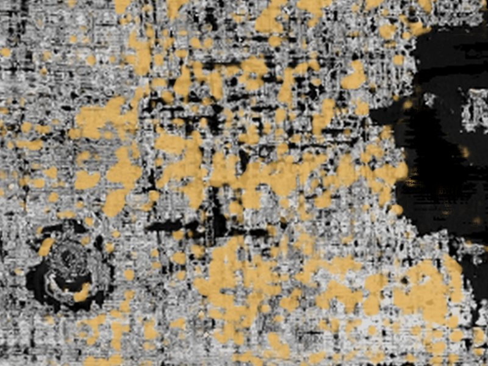

PHerc. 139 · Biblioteca Nazionale di Napoli
The book that named itself
Scholars recovered the title of this scroll before most of its body had been unrolled, naming the author and the work: the Epicurean philosopher Philodemus, On Gods, Book 8. About a fifth of it has been virtually unrolled so far.

4 pieces to explore
The name of the book
The title of this still-rolled scroll, recovered by the team: Philodemus, On Gods, Book 8.
Explore →
A crowded wrap
One of the busiest turns in PHerc. 139, packed with rows of marks.
Explore →
The next turn
The neighbouring wrap, still rich with marks.
Explore →
Deeper in the same scroll
A wider wrap, further into PHerc. 139.
Explore →